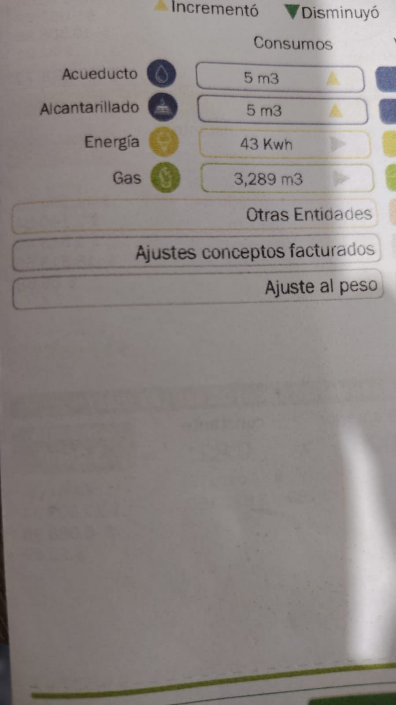
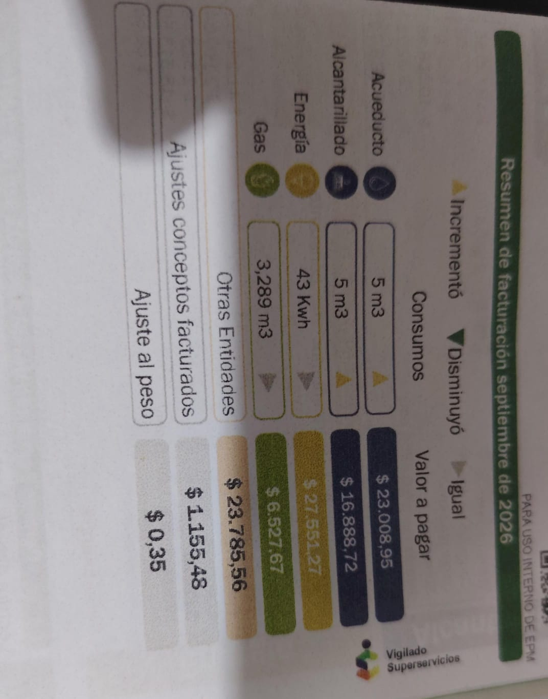

Datos del periodo actual
Consumo actual: 43 kWh
Promedio impreso: 40 kWh.
El cargo de energía visible es $27.551,27 COP; equivale a aproximadamente
$640,73 COP/kWh (cargo de energía dividido entre 43 kWh, no el total de otros servicios).


Historial de consumo

| Periodo | Consumo (kWh) | Valor de energía pagado |
|---|---|---|
| Septiembre 2025 | 50 | N/A |
| Marzo 2026 | 41 | N/A |
| Abril 2026 | 38 | N/A |
| Mayo 2026 | 38 | N/A |
| Junio 2026 | 41 | N/A |
| Julio 2026 | 38 | N/A |
| Agosto 2026 | 43 | N/A |
| Periodo actual (septiembre 2026) | 43 | $27.551,27 COP (cargo de energía) |
| Promedio impreso de los últimos seis meses | 40 kWh | No indicado |
La foto del historial muestra consumos, pero no los pagos mensuales individuales; por eso no se estiman esos valores.
Proyección de mis equipos frente a la factura
Proyección mensual de los cuatro equipos de la tabla de equipos:
16,68 kWh/semana × 52 ÷ 12 = 72,28 kWh/mes
La proyección supera en 29,28 kWh (aproximadamente 68 %) los 43 kWh de la factura. No significa que la factura esté mal: los cargadores están calculados con su potencia máxima de placa, las horas son las registradas y la factura mide todos los equipos durante otro periodo. El consumo real de los portátiles suele ser menor que el máximo del adaptador; conviene revisar sus horas y, si es posible, medirlos con un medidor de consumo.
Recomendaciones para mi familia
- Reducir el tiempo encendido de los portátiles: en el registro aparecen entre 10,8 y 11,85 horas diarias entre semana.
- Apagar el televisor al terminar de verlo; se registraron 11,6 horas al día entre semana.
- Activar suspensión automática en los portátiles y desconectar sus cargadores cuando no estén en uso.
- Mantener cerrada la puerta de la nevera y revisar su sello; su etiqueta reporta 20,9 kWh al mes.
- Comparar el siguiente recibo con los 43 kWh actuales y el promedio impreso de 40 kWh.